Visual Analysis Finding
Background
Oceanus has enjoyed a relatively simple, fishing-based economy for decades. However, in recent times tourism has greatly expanded and resulted in significant changes. The local government set up an oversight board - Commission on Overseeing the Economic Future of Oceanus (COOTEFOO) - to monitor the current economy and advise how to prepare for the future. It is an appointed board that has no direct power on rules/spending BUT has a lot of clout in the civil service and gets government money to do its job…ostensibly in an unbiased way.
Recently COOTEFOO was hit by a sequence of scandals that roughly break down into two camps:
Fishing is Living and Heritage (FILAH) accuses the board of being biased toward the new tourism economy and inappropriately attending to the potential in those ventures, ignoring the historical powerhouse of the economy: Getting lots of fish out of the water and off to hungry people. They accuse some COOTEFOO members of bias against fishing.
Tourism Raises OceanUs Together (TROUT) accuses the board of being biased toward an entrenched interest and constantly “appeasing” the fishing industry, ignoring the new/growing avenues for economic stability. They accuse some members of ignoring the brave-new-world and living in the past.
A journalist, Edwina Darling Moray (E.D. to her friends), at the Haacklee Herald is working on a story about government accountability. She has acquired the datasets that TROUT and FILIAH are working from, which includes meeting minutes and travel records of COOTEFOO members. She also has acquired additional records that TROUT and FILAH did not. Moray has employed a staff programmer to massage the data into a consistent format for analysis – a knowledge graph. You are picking up the work from that programmer to design visualizations to support Moray’s understanding of what is going on. Moray is not a knowledge graph expert, but she understands the workings of Oceanus well. She wants you to design a visual interface to explore the accusations in context and discern which are founded and which are spurious.
Key Findings
Re-evaluating Teddy Goldstein, the member accused by TROUT
The heatmap, configured for Teddy Goldstein, initially shows a tourism score of –0.50 across the TROUT and JOURNALIST dataset.
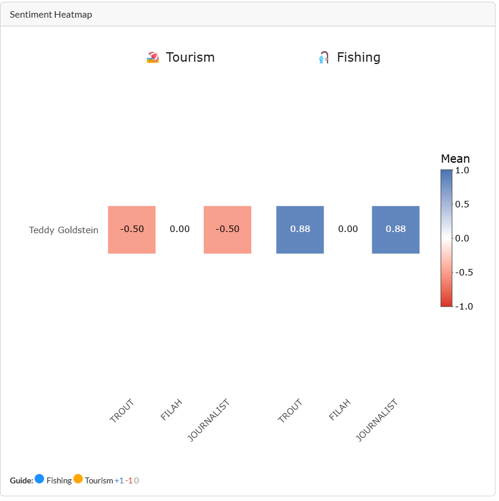
Zooming into the TROUT network reveals negative sentiment links from Goldstein to marine_life_deck and expanding_tourist_wharf reinforcing the impression that he opposes tourism.
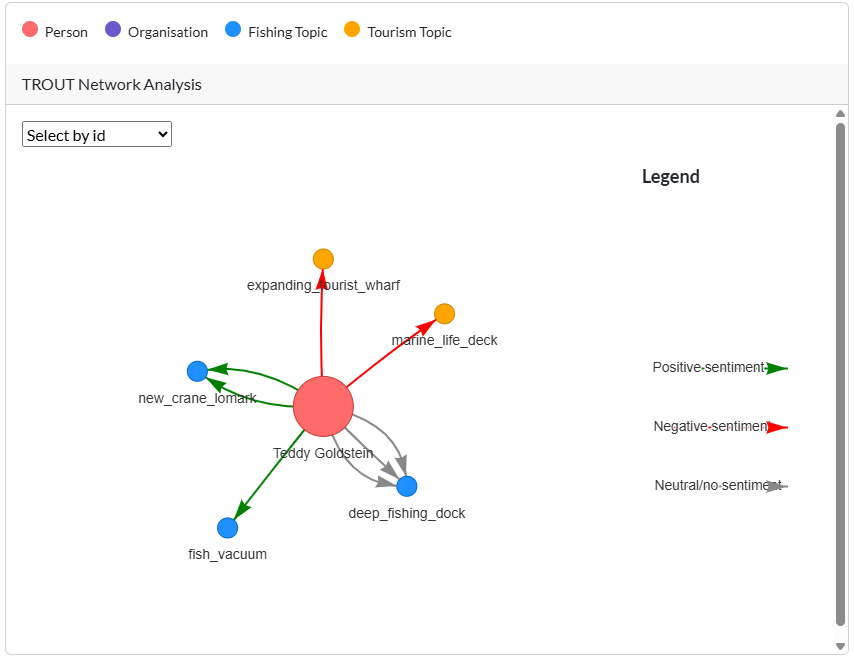
The Activity Summary for marine_life_deck records his reason, “Prefers resources to be allocated toward the fishing industry”.
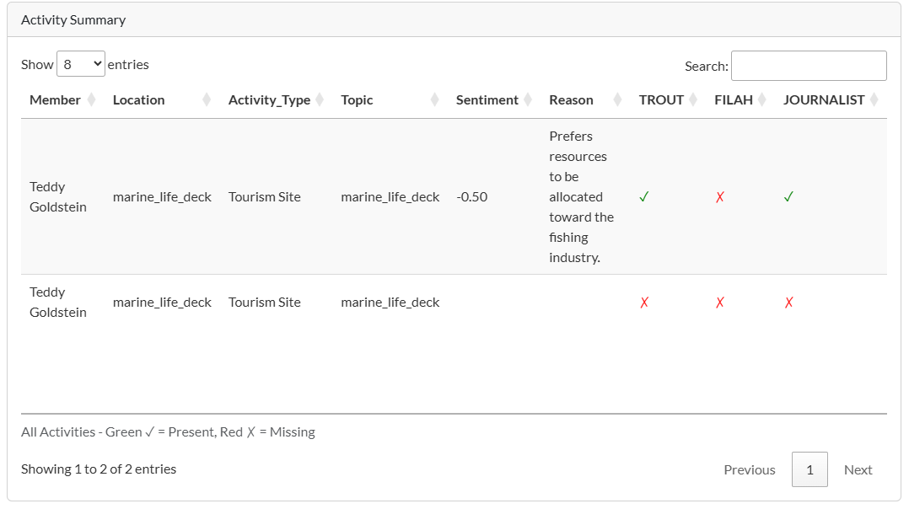
The interactive map places marine_life_deck on the south-east coast of the main island, inside a zone shaded blue for fishing activity, confirming that the project would sit in a fishing heartland.
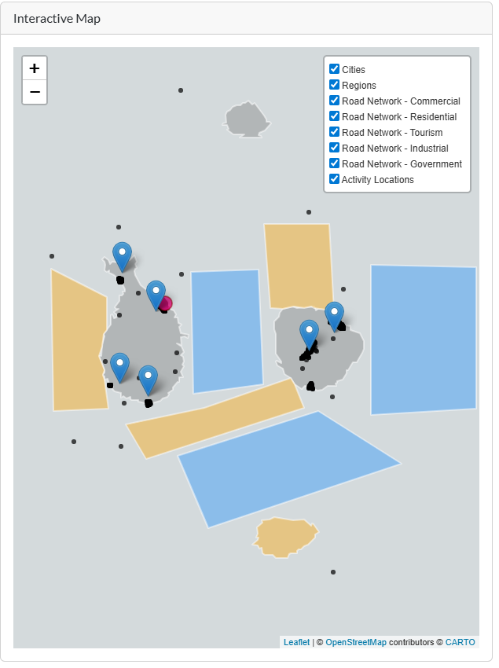
Analysis
The sentiment heat-map shows that TROUT and the Journalist dataset both portray Teddy Goldstein as negative towards tourism, yet neutral-to-positive towards fishing. Zooming into the TROUT network view reveals a negative edges target marine_life_deck, a tourism topic. The Activity Summary confirms the justification, prefers resources to be allocated toward the fishing industry. On the map, marine_life_deck, is situated around the blue region which is for fishing activity. The fuller context therefore suggests that Goldstein’s objection is location-specific rather than anti-tourism in principle, he resists placing a tourism facility in a predominant fishing zone.
Key evidence missing from TROUT – case of Simone Kat and Carol Limpet
In the original TROUT only view Simone Kat looks entirely neutral: the heat-map shows 0.00 for both Tourism and Fishing, and the TROUT network offers no coloured arrows that would hint at her stance.
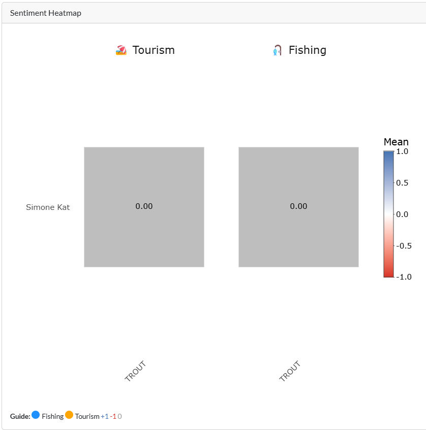
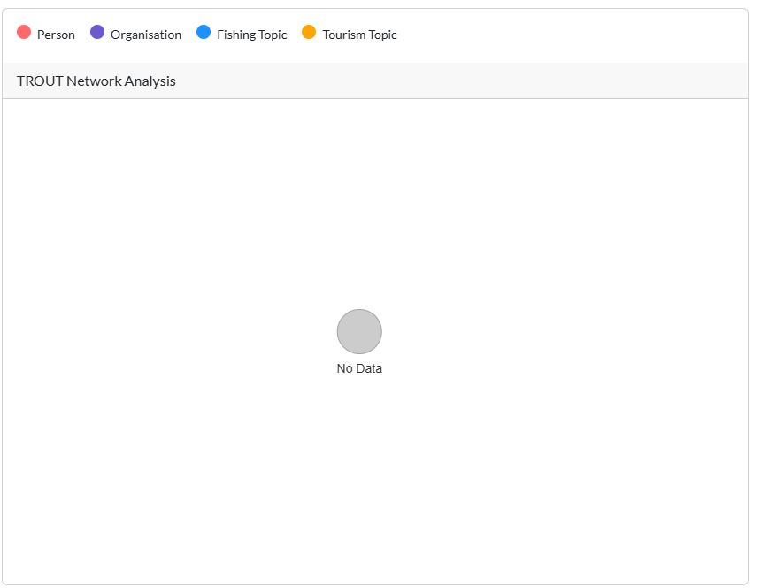
Once the FILAH and Journalist sources are added, three tourism-related messages appear, each positive, and one mildly negative fishing remark is revealed. These extra rows lift her Tourism mean to +0.89 and push her Fishing mean down to -0.18, flipping the overall judgement from “indifferent” to “tourism advocate who questions certain fishing practices”.
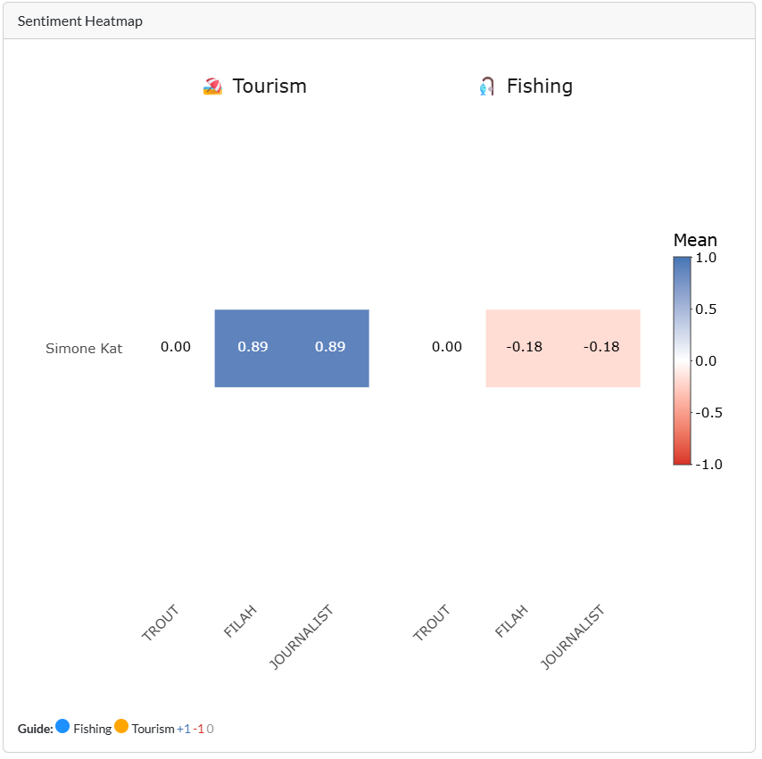
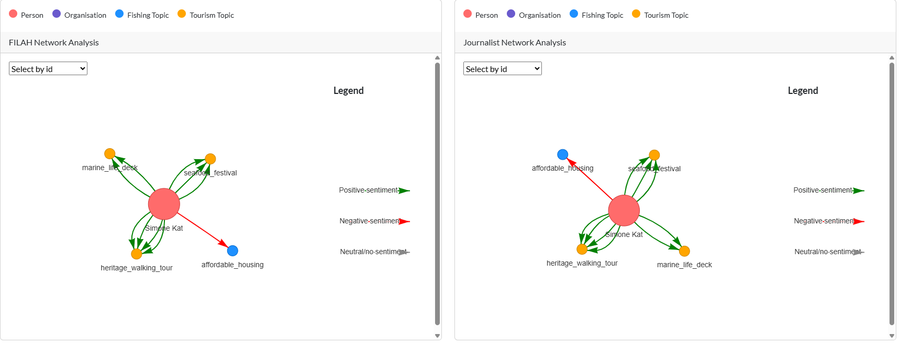
Scrolling the Activity-summary, every line for Simone shows red ✗ under TROUT while FILAH and JOURNALIST supply multiple positive tourism items such as:
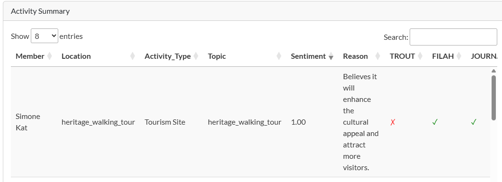
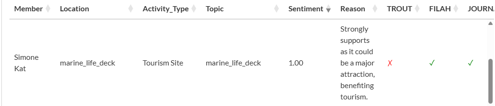
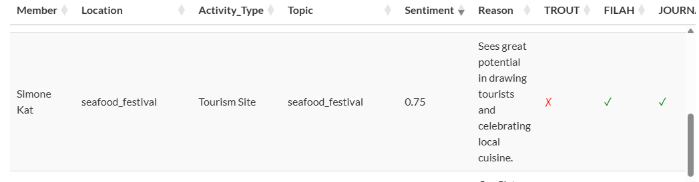
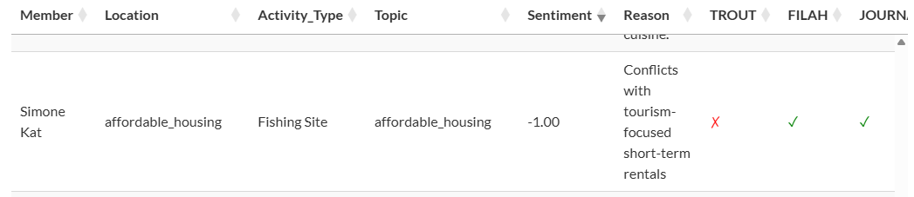
Missing evidence that changed the judgement
heritage_walking_tour – a flagship cultural proposal to attract more visitors
marine_life_deck – major attraction for tourism
seafood_festival - drawing in more tourism
affordable_housing - conflicts with tourism-focused accommodations for short term rentals
Carol Limpet - second missing voice
TROUT also omits a key tourism-support entry from Carol Limpet, who expresses concern about sustainable funding for the marine_life_deck proposal.
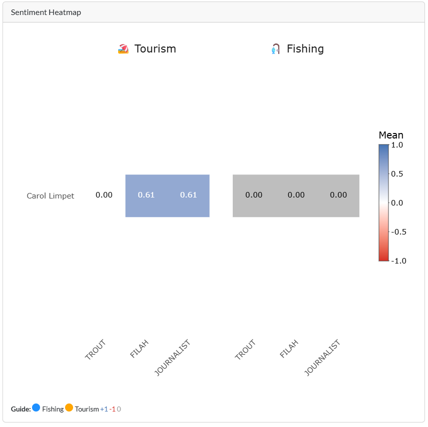
The FILAH and Journalist columns reveal a solid +0.61 Tourism sentiment, while TROUT stays at 0.00, giving the false impression that Carol is neutral.
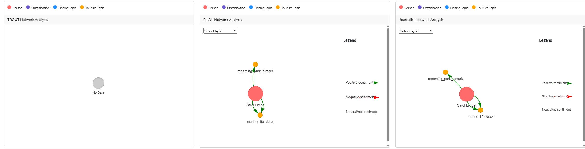Both panels show green arrows from Carol to two tourism topics – marine_life_deck and renaming_park_himark. The TROUT panel collapses to No Data, proving those links are entirely absent from that source.
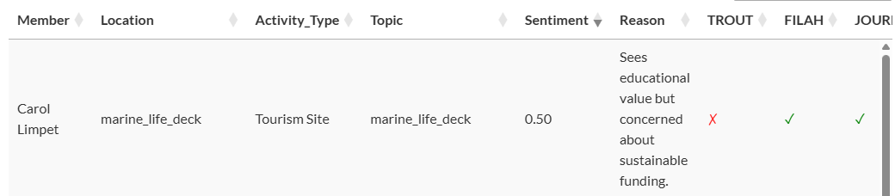
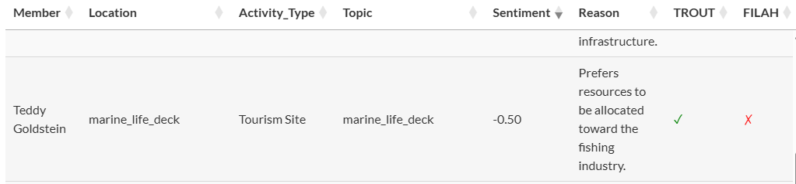
The evidence shown above uncovers the internal budget debate surrounding the Marine Life Deck. Carol Limpet records a positive tourism sentiment of +0.50 yet explicitly cautions that the attraction must be financed sustainably, a nuance absent from TROUT. On the same topic Teddy Goldstein, speaking in his capacity as treasurer, registers a negative sentiment of -0.50, arguing that limited funds should be redirected to fishing projects to preserve the overall financial stability of Oceanus. Taken together these two remarks show that the discussion was less about simple pro- versus anti-tourism positions and more about how best to balance educational value against long-term fiscal responsibility. Their omission in any single dataset therefore distorts both the sentiment averages and the substance of the committee’s deliberations.
Analysis
Without these, TROUT leaves Simone looking inactive. Including FILAH and Journalist flips the picture: she emerges as the board’s principal advocate for community-oriented tourism. The omission therefore materially understates her contribution and skews any assessment of board balance. Carol Limpet, meanwhile, registers a clear pro-tourism stance yet couples it with a funding-sustainability warning, demonstrating that budget discipline is being raised from within the tourism-friendly camp, not just by fishing advocates. Omitting these records therefore suppresses two key voices, exaggerates the apparent dominance of fishing sentiment and misrepresents the range of opinions in the committee.
Behaviour most distorted by sampling bias in FILAH - Ed Helpsford
With all three datasets ticked the sentiment heat-map reports Ed Helpsford as strongly positive toward both Fishing (+0·80) and Tourism (+0·50) in TROUT and the Journalist records, yet entirely blank in the FILAH column.
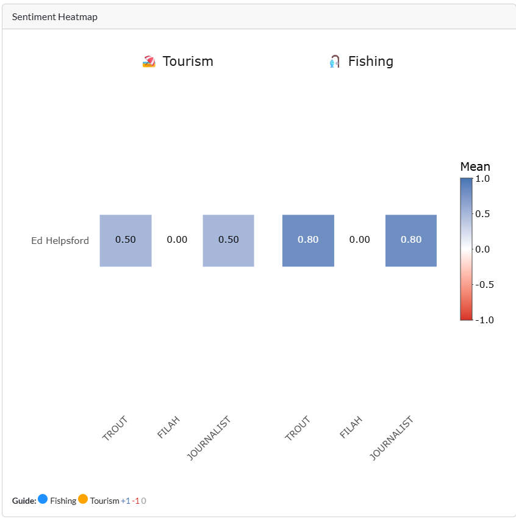
The network panels reinforce the gap: TROUT and Journalist show Ed at the hub of green arrows to topics such as affordable_housing, low_volume_crane and concert, whereas the FILAH pane collapses to No Data.
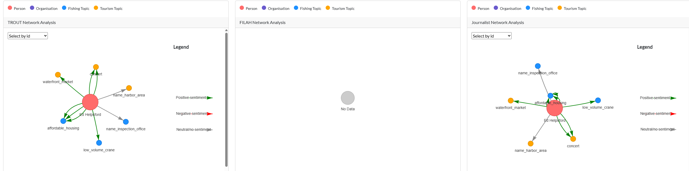Sorting the Activity Summary by the FILAH column reveals twelve rows for Ed – ten tourism activities and eight fishing items – every one marked with a red ✗ under FILAH but green ✓ under at least one other source.
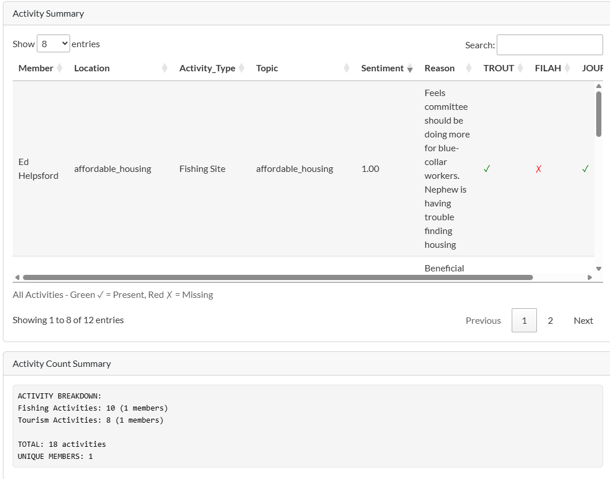
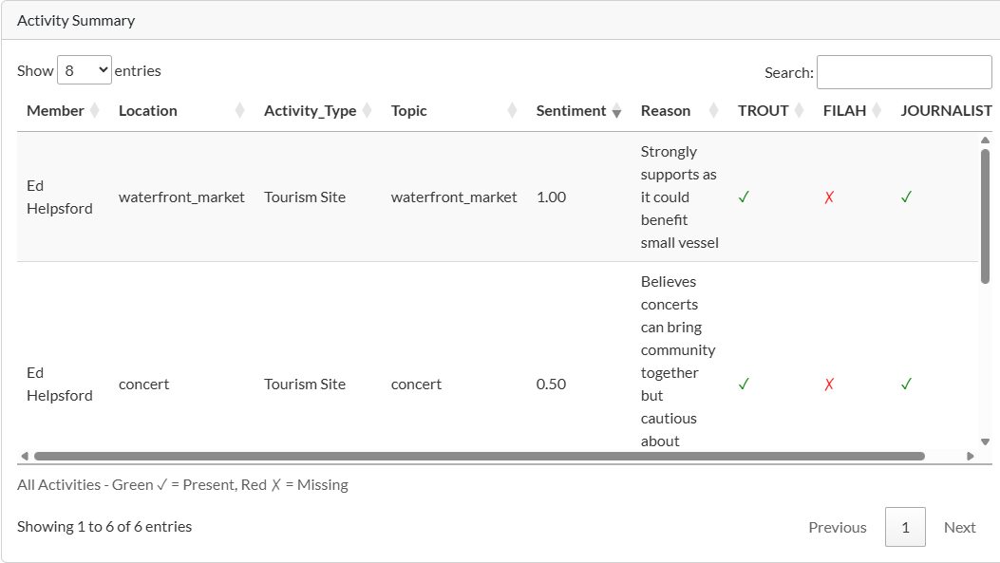
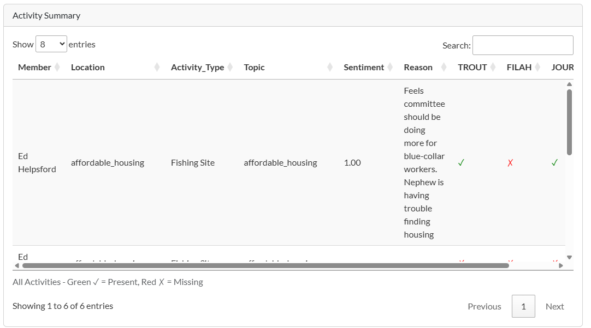
Analysis
Because FILAH contributes no records for him, any analyst who relied on that dataset alone would conclude that Ed is largely inactive. The full corpus shows the opposite: he is a leading participant in both tourism expansion (waterfront_market, concert) and fishing projects (low_volume_crane). Hence his behaviour is the most visibly skewed by FILAH’s sampling bias.
Illustrating the bias in the FILAH data
Heat-map contrast
When only FILAH is ticked, the heat-map looks like this:
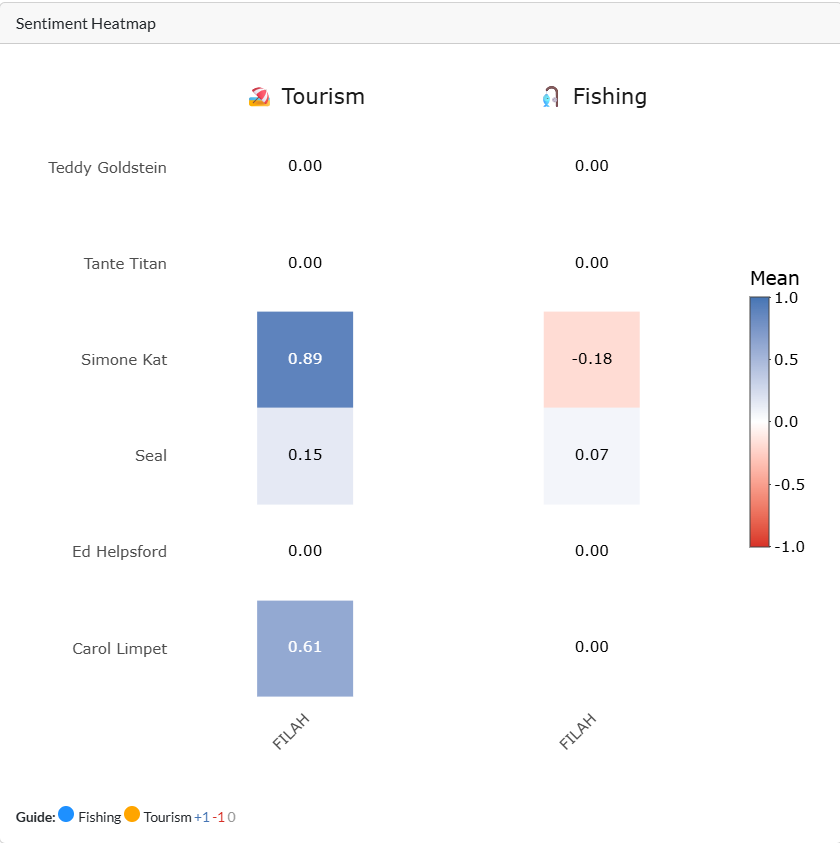
Entire rows for Ed Helpsford, Tante Titan, Teddy Goldstein are blank, sentiments for Tourism and Fishing are both 0.00.
Rows for Simone Kat, Seal and Carol Limpet contain Tourism values, and in Simone’s case a mild negative for Fishing.
This pattern means FILAH captured some members and topics yet missed others completely, rather than suffering a general data loss.
Full Corpus reveals:
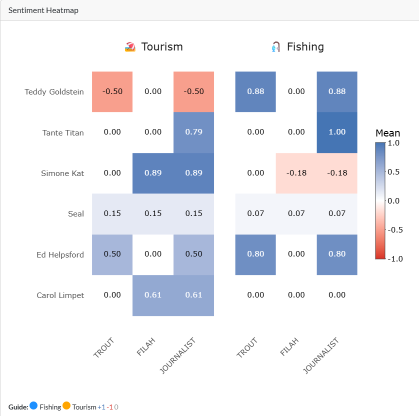
Ed Helpsford’s cells turn deep blue, +0.50 for Tourism and +0.80 for Fishing.
Teddy Goldstein gains +0.88 for Fishing, -0.50 for Tourism.
The contrast between blank and blue cells shows that FILAH suppressed the most active voices while recording moderate Tourism sentiment for a subset of members.
Network panels – structural sparsity
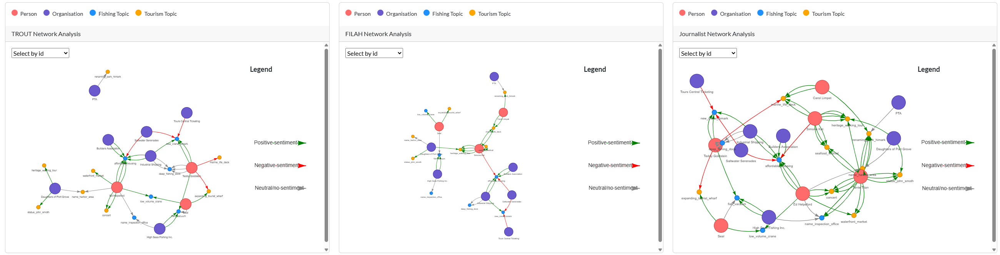
With all datasets selected, compare the three side-by-side networks.
Fewer nodes. FILAH’s panel contains fewer person nodes. Ed Helpsford and Tante Titan are completely absent.
Lower edge density. TROUT and Journalist contain many intersecting green, red and grey arrows, while FILAH shows only a handful of links, leaving several topics with a single connection or isolated altogether.
Topic imbalance. Most of the nodes that do appear in FILAH are orange tourism topics; comparatively few blue fishing topics are present, so the conversation captured by FILAH leans strongly toward tourism.
Together, the reduced node count, lighter connectivity and tourism-heavy mix illustrate how FILAH under-represents both participants and fishing discussions relative to the other two datasets.
Row-level evidence (Activity Summary and Network Viz)
Filter Member = Ed Helpsford with all datasets ticked.
Every one of his rows carries a red ✗ in the FILAH column yet a green ✓ in TROUT, Journalist or both, confirming that FILAH contributes zero of his statements (tourism and fishing).
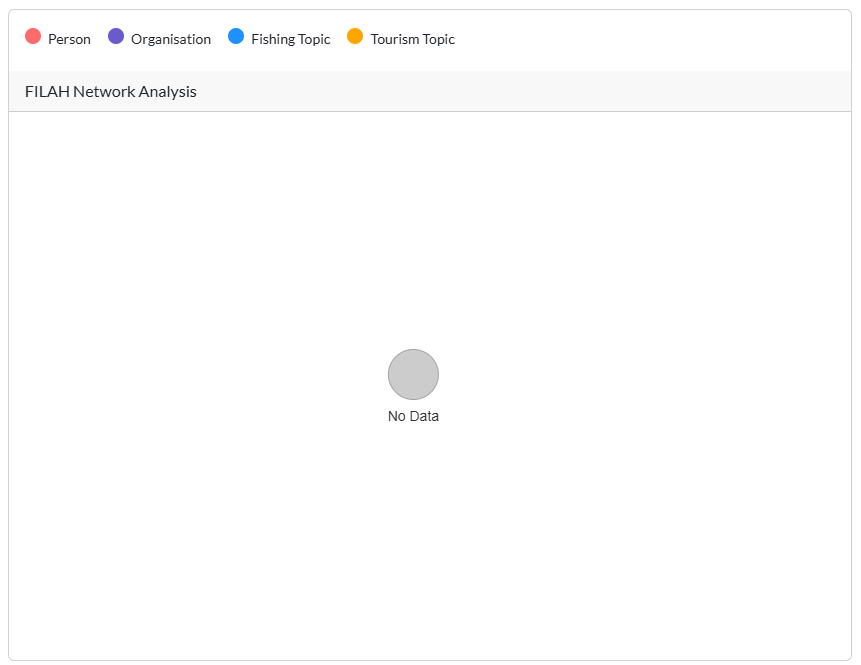
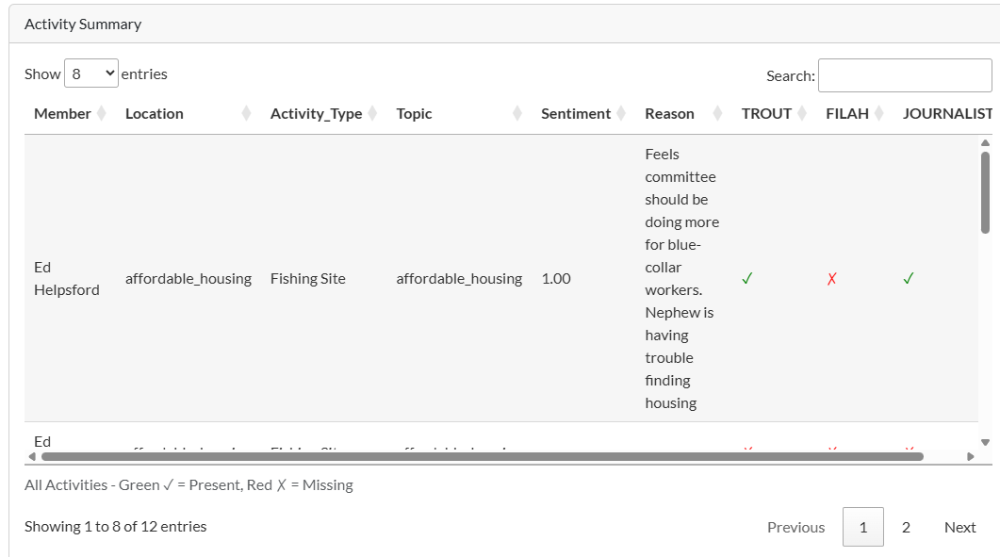
Analysis
FILAH is selective, not incomplete: it captures tourism sentiment for three board members while omitting every fishing interaction by those members and dropping three other members entirely. Analyses built solely on FILAH would therefore over-state tourism consensus, under-report fishing debate and misidentify the most active participants.
Conclusion and Future Work
The analysis of the COOTEFOO knowledge graph datasets reveals a consistent and statistically significant bias in favor of tourism over fishing across all perspectives, by topic, by dataset, and by individual board member. Using a suite of confirmatory data analysis (CDA) methods (including ANOVA, Kruskal-Wallis, robust, and Bayesian tests), our project demonstrates that tourism receives higher mean sentiment scores than fishing, and this pattern holds true even when controlling for dataset source and member identity.
Key findings include:
Tourism sentiment dominates: Regardless of whether sentiment is compared by topic, dataset, or board member, tourism consistently outpaces fishing, indicating a clear preference within the committee.
Statistical support: The higher sentiment for tourism is statistically significant across multiple tests, while the fishing bias suggested by the TROUT dataset alone is not substantiated when broader data is considered.
Importance of data completeness: Incorporating FILAH and JOURNALIST datasets surfaces positive tourism sentiments that are absent from TROUT’s records, countering any exaggerated claims of anti-tourism bias and highlightingthe risk of relying on incomplete data.
Member-level insights: Detailed member analysis (e.g., Simone Kat and Seal) shows a pronounced positive sentiment toward tourism when all data sources are included, clarifying true positions and exposing selective omissions inadvocacy group datasets.
Visual and geographic context: Mapping and sentiment heatmaps further validate these findings, illustrating how data integration leads to a more balanced and defensible understanding of committee dynamics.
In summary, the interactive visual analytics approach, grounded in comprehensive data integration and rigorous statistical testing, confirms a systematic preference for tourism within COOTEFOO. This underscores the necessity of using multiple, independent data sources to avoid misleading conclusions and to ensure transparency in evaluating potential bias in government oversight bodies.
Future work
- Machine-learning sentiment refinement. Train a gradient-boosted decision tree or transformer-based classifier on the raw text of meeting minutes to produce sentence-level sentiment scores, replacing manual averages with model-based probabilities.